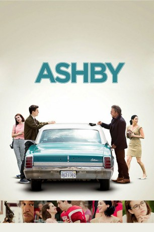
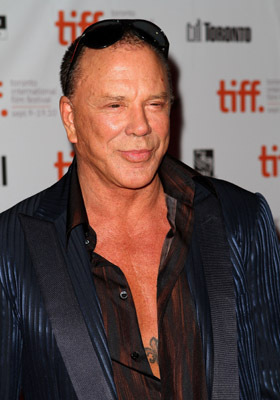
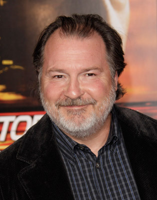
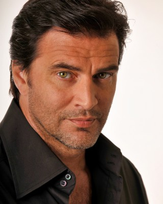
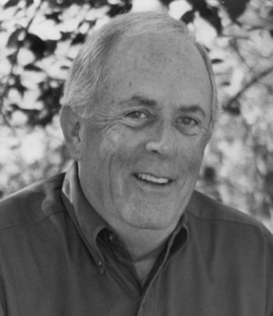

#2962 Ashby
 
 IMDB-Wertung: 6.4 / 10
IMDB-Wertung: 6.4 / 10  Metascore: 46
Metascore: 46 
Nach einem Umzug durchs halbe Land mit seiner neuerdings alleinstehenden Mutter lernt ein nachdenklicher Highschool-Schüler einige unerwartete Lektionen des Lebens, als er sich mit seinem neuen schrulligen Nachbarn anfreundet, einem ehemaligen CIA-Killer, der gerade am Scheideweg steht und eine alte Rechnung begleichen will.
DUBBED
Jahr: 2015
Dauer: 103 Minuten
FSK:
Land: USA Studio: Paramount PicturesTonspuren: DD2.0 - ,
Untertitel: Englisch,
Auflösung: 1080p (1920x800) Größe: 7997 MB
Genre: Drama, Komödie, Liebe
Regisseur: Tony McNamara
Drehbuch: Tony McNamara
Soundtrack: Alec Puro
Darsteller:
-  Mickey Rourke als Ashby Holt
 Nat Wolff als Ed Wallis
Nat Wolff als Ed Wallis Emma Roberts als Eloise
Emma Roberts als Eloise Sarah Silverman als June Wallis
Sarah Silverman als June Wallis-  Kevin Dunn als Coach Bruton
- Zachary Knighton als Father Ted
 Michael Lerner als Entwhistle
Michael Lerner als Entwhistle-  John Enos III als Coach Wally
 Steve Coulter als Peter Black
Steve Coulter als Peter Black Tom Nowicki als Kenrick
Tom Nowicki als Kenrick- Adam Aalderks als Valchek
- Seth Dousman als Smits
 Jason Davis als Mr. Mark
Jason Davis als Mr. Mark- Max Lesser als Doctor
- Jodonna Gaines als Nurse
- Audrey Reid Couch als McCall
- Paul Rolfes als Jerry
- Steven Roten als Eric
 James Alcorn als Football Fan , uncredited
James Alcorn als Football Fan , uncredited- Jeffrey Barkey als Football Spectator , uncredited
 John Carter als Prep School Parent , uncredited
John Carter als Prep School Parent , uncredited- Willie Tyrone Ferguson als Funeral Mourner , uncredited
- Sophia Habibi als Football Fan , uncredited
- M.C. Hagerman als Airport Traveler , uncredited
- PJ Hubbard als Football Fan , uncredited
-  Jim Keisler als Halcyon Club Member , uncredited
- Ted Lacki als Airport Husband , uncredited
 John Archer Lundgren als Fifty-Yard Line Spectator , uncredited
John Archer Lundgren als Fifty-Yard Line Spectator , uncredited- Corey Maher als CIA Assassin , uncredited
- Jimmy Manning als Football Fan , uncredited
- Robert McRary als Parent , uncredited
- Bailey Nemirow als Sophie Holt , uncredited
- Tim Olcott als 'Young Fella' Waiter , uncredited
- Noah Weisberg als Chad , uncredited
- Zachary Demopoulus als Teammate
- Hilda Freeman als Principal
- Andrea Alcorn als Football Fan , uncredited
- Kristi Booher als Waitress / Football Fan , uncredited
- Kelly Borgnis als Football Fan , uncredited
- Deaven Brooks als Football fan , uncredited
- Stephen Mackenzie Brown als Student , uncredited
- Carol Bruckner als Tour Group Member at Airport , uncredited
- John M. Carpenter als Prep School Parent , uncredited
- Bonnie Cole als Mourner , uncredited
- Aaron Dozzi als Football Fan , uncredited
- Derwin Frank als Airport Traveler , uncredited
- Brent Gribble als Airport Maintenance Worker , uncredited
- Keya Hamilton als Airport Traveler , uncredited
- Kimberly Hester Huffstetler als Football Fan , uncredited
- Marcellus als Extra , uncredited
Datei: X:\2015(A-F)\Ashby (2015, FSK, 1920x800).mkv seit 08.01.2016
Festplatte: HD 2015(A-Z)
 Es gibt insgesamt 143 Filme in der Gruppe '2015(A-F)'
Es gibt insgesamt 143 Filme in der Gruppe '2015(A-F)'